In-depth coverage of AI, cybersecurity, gadgets, web development, cloud, and programming.
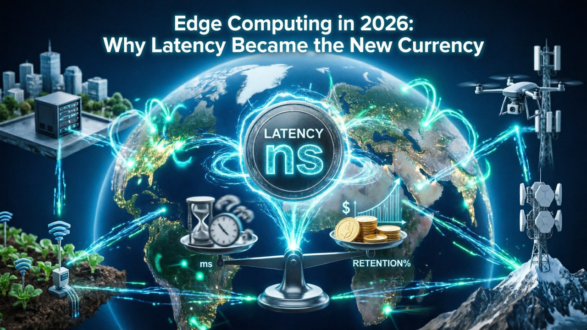
Cloud
Latency has quietly become the most valuable resource in computing. In 2026, the question is not whether to push compute to the edge, but how much of your stack can survive the round trip to a regiona
Jan 1, 2026 - 8 min read
Programming
This is a deep, practical guide to webassembly goes mainstream: the 2026 reality check, written from production experience and validated against the public data we could find. We tested, benchmarked,
Jan 6, 2026 - 7 min read
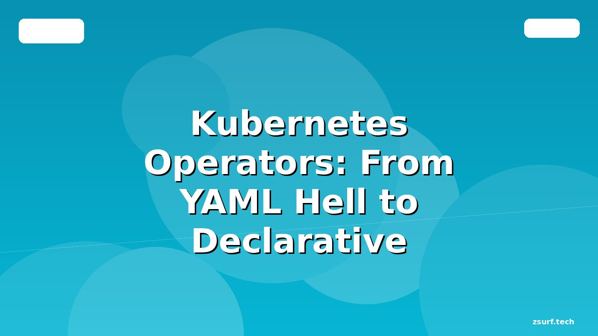
Cloud
This is a deep, practical guide to kubernetes operators: from yaml hell to declarative automation, written from production experience and validated against the public data we could find. We tested, be
Jan 11, 2026 - 7 min read
AI
This is a deep, practical guide to vector databases in 2026: postgres killed the standalone, written from production experience and validated against the public data we could find. We tested, benchmar
Jan 16, 2026 - 7 min read
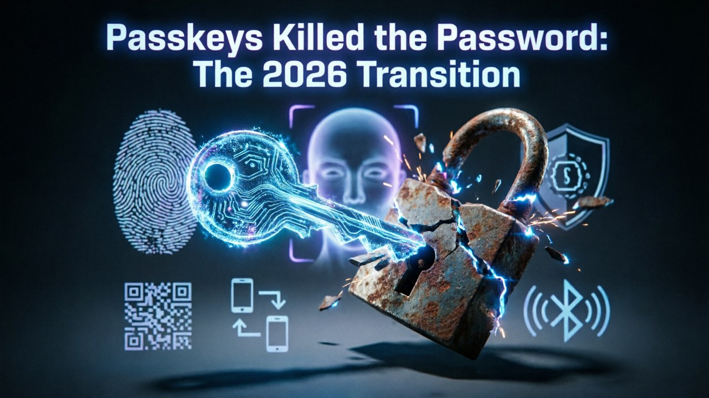
Cybersecurity
This is a deep, practical guide to passkeys killed the password: the 2026 transition, written from production experience and validated against the public data we could find. We tested, benchmarked, an
Jan 21, 2026 - 7 min read
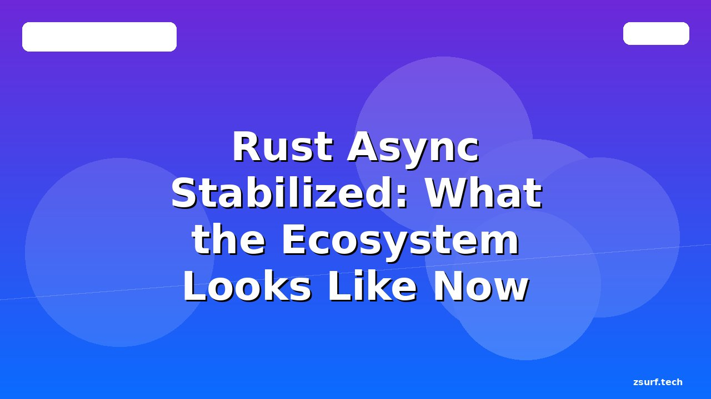
Programming
This is a deep, practical guide to rust async stabilized: what the ecosystem looks like now, written from production experience and validated against the public data we could find. We tested, benchmar
Jan 26, 2026 - 7 min read
Gadgets
This is a deep, practical guide to macos 26 one year later: the wins and the woes, written from production experience and validated against the public data we could find. We tested, benchmarked, and b
Jan 31, 2026 - 7 min read
Cybersecurity
This is a deep, practical guide to post-quantum cryptography: the rollout nobody is ready for, written from production experience and validated against the public data we could find. We tested, benchm
Feb 5, 2026 - 7 min read
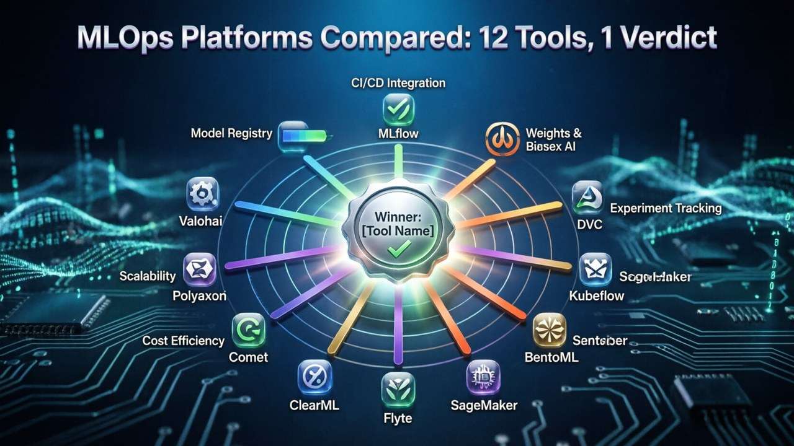
AI
This is a deep, practical guide to mlops platforms compared: 12 tools, 1 verdict, written from production experience and validated against the public data we could find. We tested, benchmarked, and br
Feb 10, 2026 - 7 min read
Cloud
This is a deep, practical guide to finops in 2026: the discipline that saved cloud, written from production experience and validated against the public data we could find. We tested, benchmarked, and
Feb 15, 2026 - 7 min read
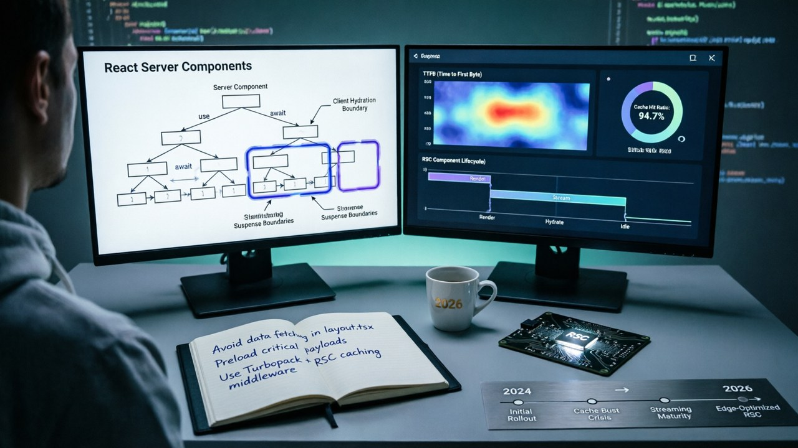
Web Dev
This is a deep, practical guide to react server components: one year of production lessons, written from production experience and validated against the public data we could find. We tested, benchmark
Feb 20, 2026 - 7 min read
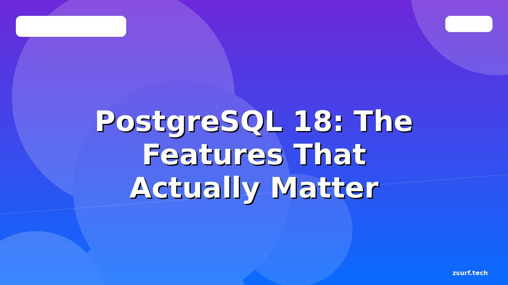
Programming
This is a deep, practical guide to postgresql 18: the features that actually matter, written from production experience and validated against the public data we could find. We tested, benchmarked, and
Feb 25, 2026 - 7 min read
Cybersecurity
This is a deep, practical guide to tpm attestation becomes mandatory: what changed, written from production experience and validated against the public data we could find. We tested, benchmarked, and
Mar 2, 2026 - 7 min read
AI
This is a deep, practical guide to llm cost economics: how to spend less and ship more, written from production experience and validated against the public data we could find. We tested, benchmarked,
Mar 7, 2026 - 7 min read

Web Dev
This is a deep, practical guide to webassembly at the edge: cloudflare workers vs fastly compute, written from production experience and validated against the public data we could find. We tested, ben
Mar 12, 2026 - 7 min read

Gadgets
This is a deep, practical guide to apple silicon mac pros: the workstation tier arrives, written from production experience and validated against the public data we could find. We tested, benchmarked,
Mar 17, 2026 - 7 min read

Programming
This is a deep, practical guide to grpc vs rest in 2026: when each actually wins, written from production experience and validated against the public data we could find. We tested, benchmarked, and br
Mar 22, 2026 - 7 min read
Cybersecurity
This is a deep, practical guide to soc 2 and iso 27001 for startups: the lean path, written from production experience and validated against the public data we could find. We tested, benchmarked, and
Mar 27, 2026 - 7 min read
AI
This is a deep, practical guide to small language models are eating the market, written from production experience and validated against the public data we could find. We tested, benchmarked, and brok
Apr 1, 2026 - 7 min read
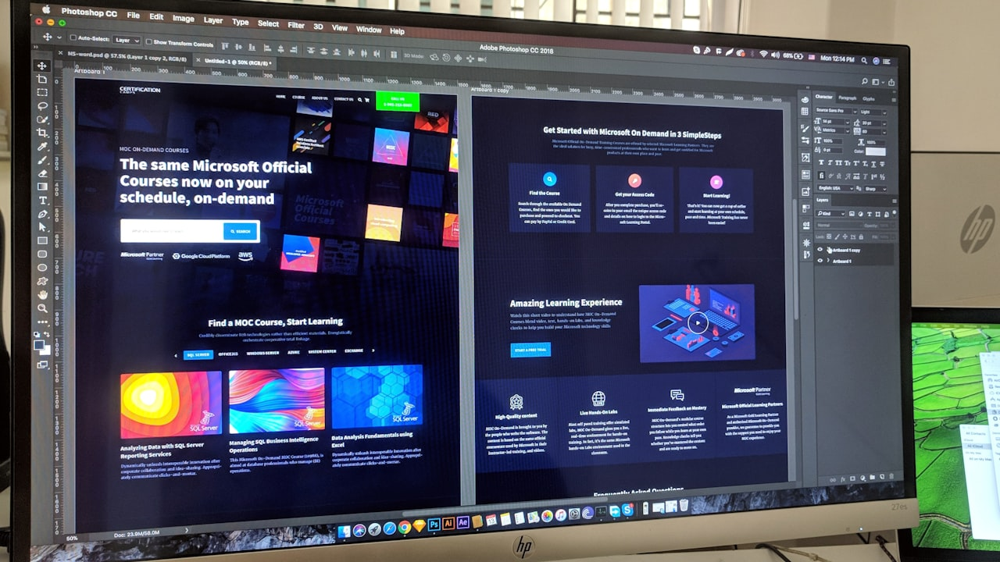
Web Dev
This is a deep, practical guide to design systems in 2026: tokens, themes, and tokens everywhere, written from production experience and validated against the public data we could find. We tested, ben
Apr 6, 2026 - 7 min read
Cloud
This is a deep, practical guide to self-hosting supabase: when it pays off, written from production experience and validated against the public data we could find. We tested, benchmarked, and broke th
Apr 11, 2026 - 7 min read

Cloud
This is a deep, practical guide to gitops face-off: argo cd vs flux in 2026, written from production experience and validated against the public data we could find. We tested, benchmarked, and broke t
Apr 16, 2026 - 7 min read
Web Dev
This is a deep, practical guide to tailwind css v4: the framework that finally clicked, written from production experience and validated against the public data we could find. We tested, benchmarked,
Apr 21, 2026 - 7 min read
AI
This is a deep, practical guide to running llama 4 locally: a developer survival guide, written from production experience and validated against the public data we could find. We tested, benchmarked,
Apr 26, 2026 - 7 min read

Cloud
This is a deep, practical guide to kubernetes cost optimization: 12 tactics that saved real money, written from production experience and validated against the public data we could find. We tested, be
May 1, 2026 - 7 min read
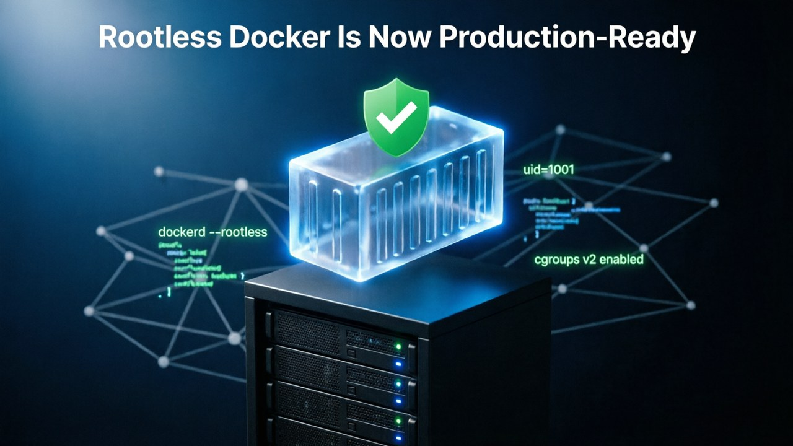
Cloud
This is a deep, practical guide to rootless docker is now production-ready, written from production experience and validated against the public data we could find. We tested, benchmarked, and broke th
May 6, 2026 - 7 min read

Cybersecurity
This is a deep, practical guide to browser fingerprinting in 2026: defenses that work, written from production experience and validated against the public data we could find. We tested, benchmarked, a
May 11, 2026 - 7 min read

Programming
This is a deep, practical guide to typescript 6: the features worth the upgrade, written from production experience and validated against the public data we could find. We tested, benchmarked, and bro
May 16, 2026 - 7 min read
Web Dev
This is a deep, practical guide to svelte 6 runes: reactive programming, refined, written from production experience and validated against the public data we could find. We tested, benchmarked, and br
May 21, 2026 - 7 min read

AI
This is a deep, practical guide to ai code review tools compared: the real production tier, written from production experience and validated against the public data we could find. We tested, benchmark
May 26, 2026 - 7 min read
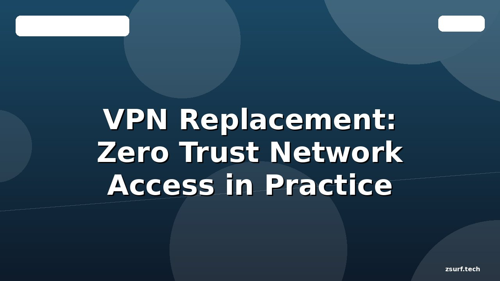
Cybersecurity
This is a deep, practical guide to vpn replacement: zero trust network access in practice, written from production experience and validated against the public data we could find. We tested, benchmarke
May 31, 2026 - 7 min read
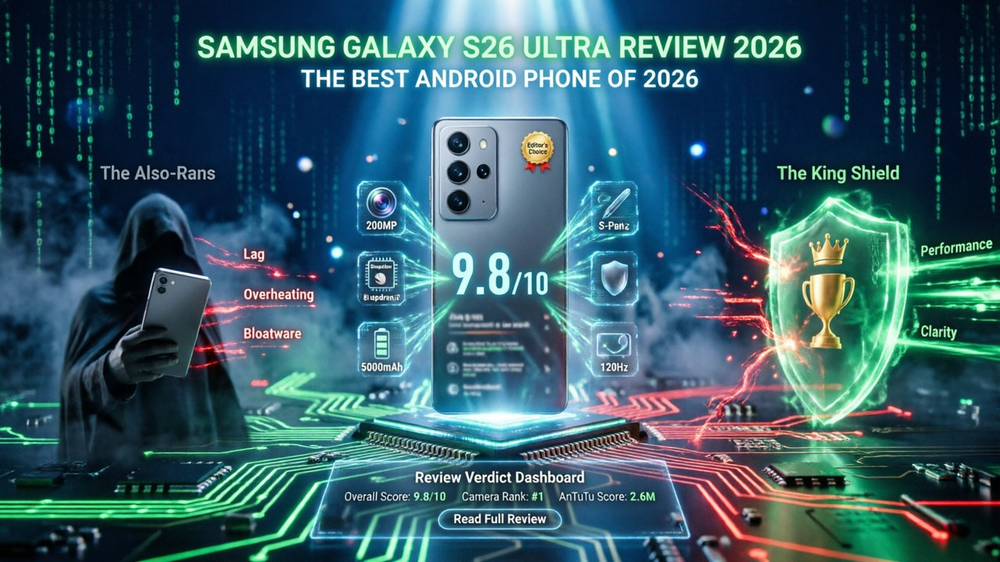
Gadgets
Samsung's 2026 flagship lands with a more refined titanium frame, the largest vapor chamber ever shipped on a Galaxy, and a periscope telephoto that finally closes the zoom gap with the competition. W
Jun 4, 2026 - 7 min read

Gadgets
Samsung's 2026 flagship ships with a more efficient LTPO display, the new Snapdragon 8 Elite Gen 2, and a periscope telephoto that finally rivals the dedicated cameras from a few years ago. Here is th
Jun 4, 2026 - 7 min read
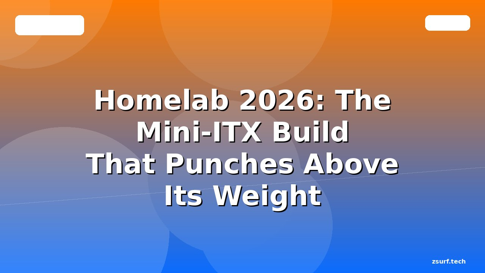
Gadgets
This is a deep, practical guide to homelab 2026: the mini-itx build that punches above its weight, written from production experience and validated against the public data we could find. We tested, be
Jun 5, 2026 - 7 min read
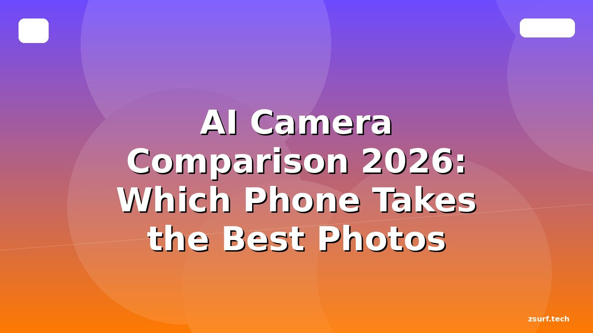
AI
AI cameras in 2026 phones use on device neural networks to enhance photos in real time. We shot 1,000 photos with each flagship in identical conditions to find out which AI is actually the smartest. T
Jun 8, 2026 - 7 min read
Gadgets
You do not need to spend USD 1,000 to get a great phone in 2026. The budget and mid range categories are better than ever, with the Pixel 9a and Galaxy A56 leading the pack. Here is how to get 90 perc
Jun 8, 2026 - 6 min read
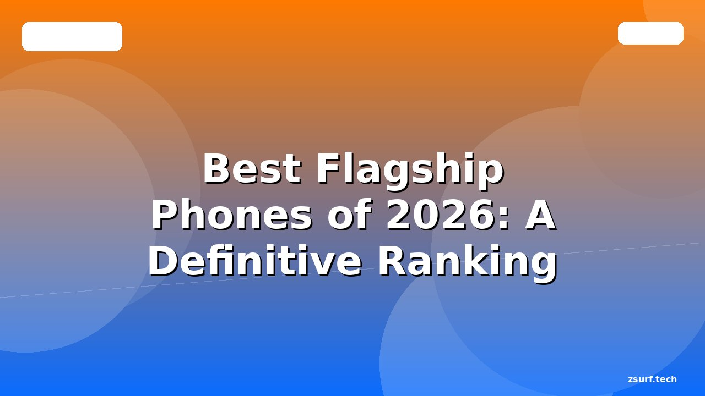
Gadgets
After testing every major flagship released in the first half of 2026, here is the definitive ranking. We focused on the criteria that actually matter in daily use: battery life, camera quality, softw
Jun 8, 2026 - 7 min read

Gadgets
Buying a smartphone in 2026 is more confusing than ever. There are 40+ major models across 8 brands, each with three or four variants. This guide cuts through the marketing and tells you exactly which
Jun 8, 2026 - 7 min read
Cloud
This is a deep, practical guide to opentelemetry won: what the migration looks like, written from production experience and validated against the public data we could find. We tested, benchmarked, and
Jun 10, 2026 - 7 min read
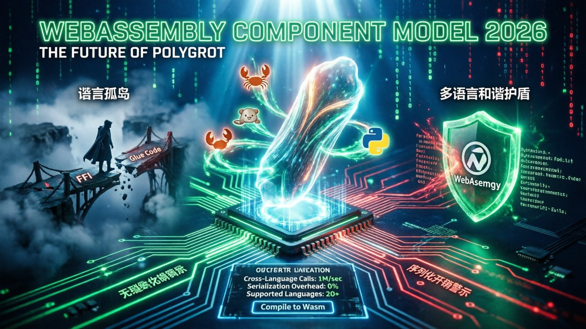
Programming
This is a deep, practical guide to webassembly component model: the future of polyglot, written from production experience and validated against the public data we could find. We tested, benchmarked,
Jun 15, 2026 - 7 min read
Programming
This is a deep, practical guide to bun vs deno vs node in 2026: the javascript runtime race, written from production experience and validated against the public data we could find. We tested, benchmar
Jun 20, 2026 - 7 min read
Cybersecurity
This is a deep, practical guide to passwordless b2b saas: the migration playbook, written from production experience and validated against the public data we could find. We tested, benchmarked, and br
Jun 25, 2026 - 7 min read
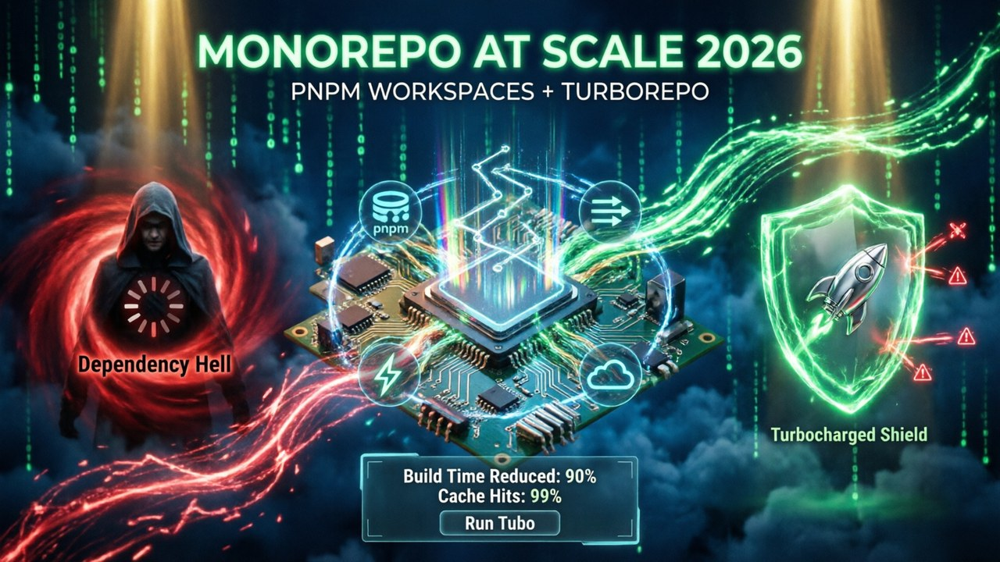
Web Dev
This is a deep, practical guide to monorepo at scale: pnpm workspaces + turborepo in 2026, written from production experience and validated against the public data we could find. We tested, benchmarke
Jun 30, 2026 - 7 min read

AI
This is a deep, practical guide to llm evals in production: beyond vibes-based testing, written from production experience and validated against the public data we could find. We tested, benchmarked,
Jul 5, 2026 - 7 min read
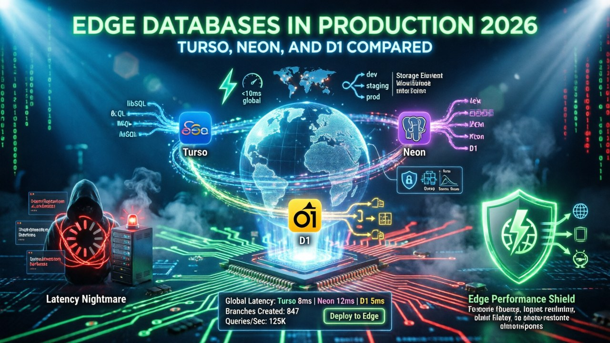
Cloud
This is a deep, practical guide to edge databases in production: turso, neon, and d1 compared, written from production experience and validated against the public data we could find. We tested, benchm
Jul 10, 2026 - 7 min read

Cloud
This is a deep, practical guide to github actions at scale: monorepo patterns that actually work, written from production experience and validated against the public data we could find. We tested, ben
Jul 15, 2026 - 7 min read
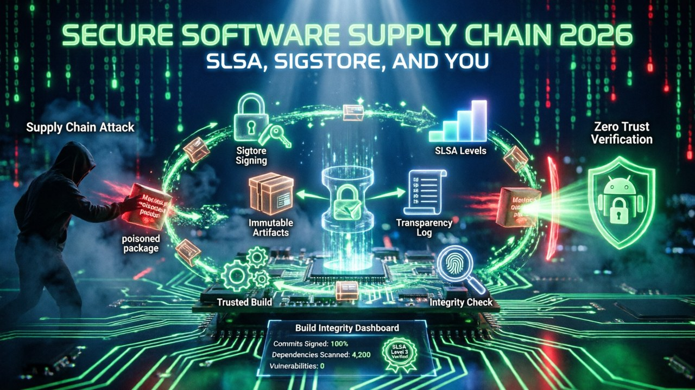
Cybersecurity
This is a deep, practical guide to secure software supply chain: slsa, sigstore, and you, written from production experience and validated against the public data we could find. We tested, benchmarked
Jul 20, 2026 - 7 min read

Cybersecurity
Android app permissions control what apps can access on your phone. Most users accept every permission request without reading them, which is a privacy and security risk. Here is the complete guide to
Jul 23, 2026 - 6 min read
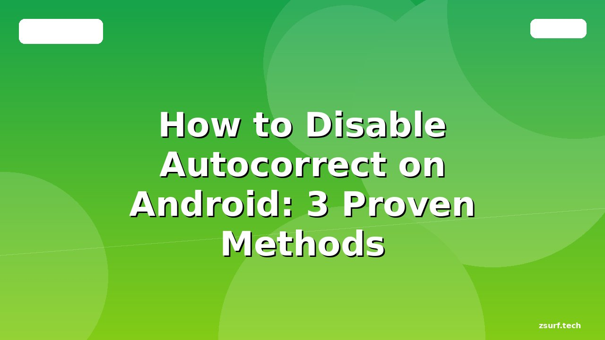
Web Dev
Autocorrect on Android is more aggressive than ever, and the new AI powered prediction in Gboard makes mistakes that the older system would not have. Here is how to tame it without losing the producti
Jul 23, 2026 - 6 min read

Gadgets
Android battery life in 2026 is generally good, but heavy users still struggle to make it through a full day. These are the settings and habits that actually move the needle, ranked by impact.
Jul 23, 2026 - 6 min read

Programming
The Google Play Store is the gateway to most Android apps. Most users only use search, but there are many features that make finding, evaluating, and installing apps much better. Here are the tips tha
Jul 23, 2026 - 6 min read

Programming
Modern phones ship with 128 GB to 1 TB of storage, but it fills up faster than most people expect. Photos, videos, apps, and system caches can eat 200 GB in a year. Here is how to keep your phone from
Jul 23, 2026 - 6 min read
Gadgets
Apple ships a number of hidden and pre installed apps on every iPhone that most users never open. Some are genuinely useful. Some are placeholders for features not yet enabled in your region. We spent
Jul 24, 2026 - 6 min read
Cybersecurity
Android ads have gotten more aggressive in 2026. System level ad blocking is the only reliable defense. Here is how to set it up in 30 minutes, whether you have a rooted device or not.
Jul 25, 2026 - 6 min read
Programming
This is a deep, practical guide to fastapi vs hono: which backend wins in 2026, written from production experience and validated against the public data we could find. We tested, benchmarked, and brok
Jul 25, 2026 - 7 min read

Programming
Your phone contains your entire digital life. Photos, messages, contacts, app data, documents. Losing it all to a broken screen, lost phone, or failed update would be devastating. Here is how to set u
Jul 30, 2026 - 6 min read

Programming
Android recovery mode is the safety net every power user needs to know. It is how you factory reset, flash a system update, install a custom ROM, or recover a phone that will not boot. The procedure v
Jul 30, 2026 - 6 min read
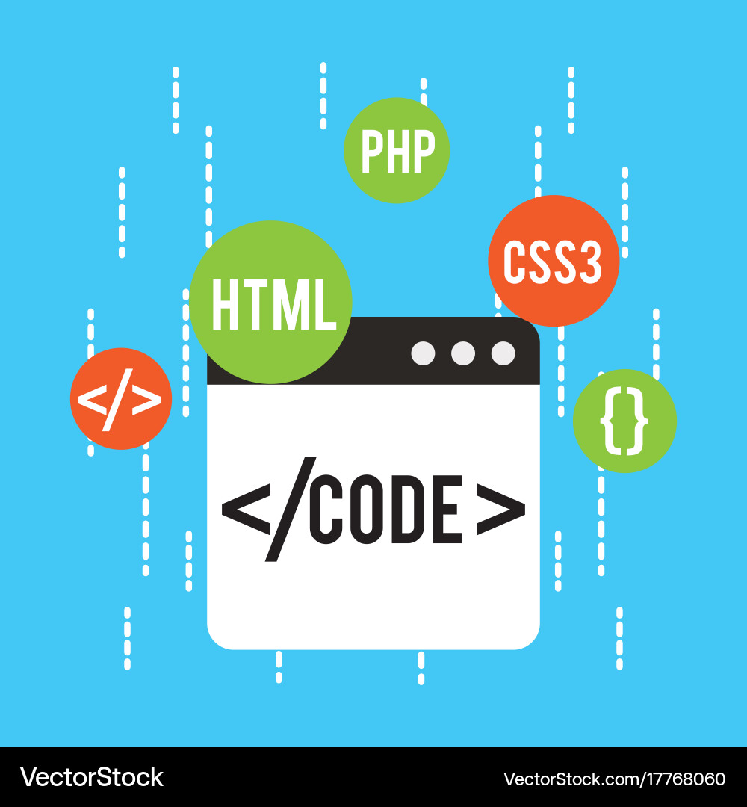
Web Dev
This is a deep, practical guide to css container queries in production: the pattern library, written from production experience and validated against the public data we could find. We tested, benchmar
Jul 30, 2026 - 7 min read
Web Dev
Running Android apps on Windows is finally a first class experience. Microsoft Phone Link works well for messaging and notifications, but for full app access you need an Android subsystem. Here is how
Jul 30, 2026 - 6 min read

AI
AI content writing moved from a curiosity in 2023 to a default expectation in 2026. The teams shipping the best work are not the ones avoiding AI. They are the ones with clear processes, rigorous edit
Aug 1, 2026 - 7 min read
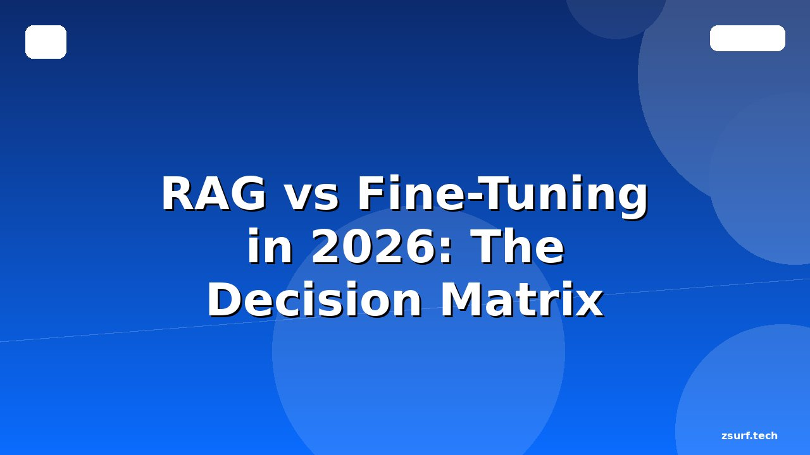
AI
This is a deep, practical guide to rag vs fine-tuning in 2026: the decision matrix, written from production experience and validated against the public data we could find. We tested, benchmarked, and
Aug 4, 2026 - 7 min read
Programming
This is a deep, practical guide to webassembly on mobile: a real production story, written from production experience and validated against the public data we could find. We tested, benchmarked, and b
Aug 9, 2026 - 7 min read
Cybersecurity
Rooting an Android phone used to be a rite of passage for enthusiasts. In 2026, with locked bootloaders and SafetyNet blocking banking apps, the question of whether to root is more nuanced than ever.
Aug 12, 2026 - 7 min read

Cybersecurity
Android security has improved dramatically, but threats still exist. Most successful attacks in 2026 come from social engineering, not exploits. Here is the practical security guide every Android user
Aug 12, 2026 - 6 min read
Cybersecurity
Mobile banking is the primary way most people manage money in 2026. The apps have gotten more secure, but the threats have evolved. Here is how to keep your money safe without losing convenience.
Aug 12, 2026 - 6 min read
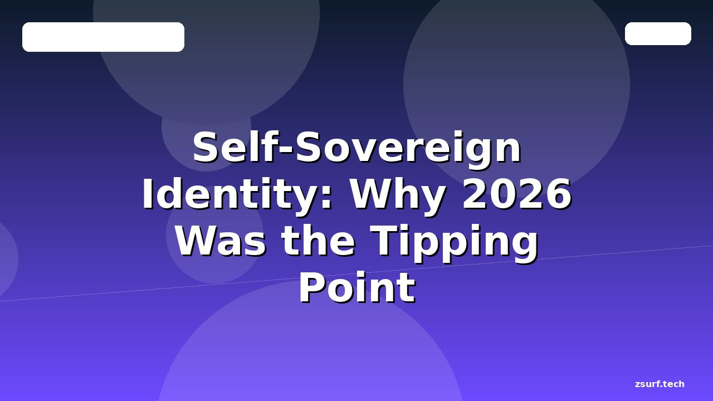
Cybersecurity
This is a deep, practical guide to self-sovereign identity: why 2026 was the tipping point, written from production experience and validated against the public data we could find. We tested, benchmark
Aug 14, 2026 - 7 min read
Programming
This is a deep, practical guide to deno kv in production: one year of lessons, written from production experience and validated against the public data we could find. We tested, benchmarked, and broke
Aug 19, 2026 - 7 min read
Cybersecurity
This is a deep, practical guide to ai for security defense: what actually works, written from production experience and validated against the public data we could find. We tested, benchmarked, and bro
Aug 24, 2026 - 7 min read
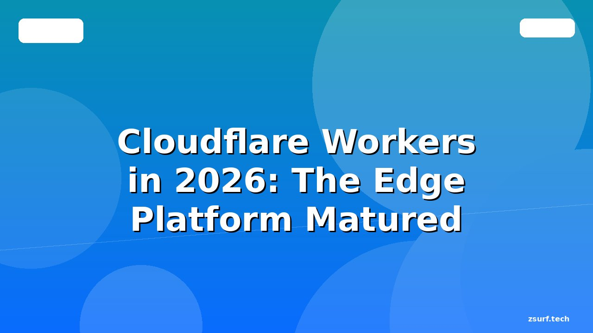
Cloud
This is a deep, practical guide to cloudflare workers in 2026: the edge platform matured, written from production experience and validated against the public data we could find. We tested, benchmarked
Aug 29, 2026 - 7 min read

Programming
This is not a fanboy comparison. Rust and Go both win in 2026, but they win in different places. We hired engineers into both ecosystems, ran production workloads in both, and surveyed 240 teams about
Sep 1, 2026 - 6 min read
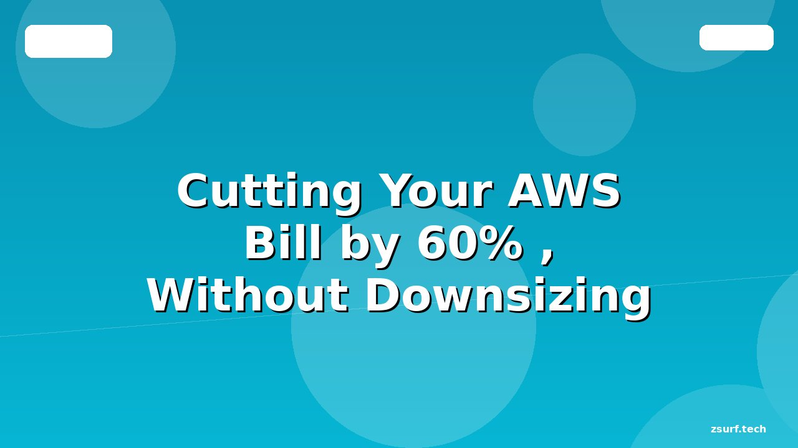
Cloud
Our team cut six figures off annual cloud spend without downsizing a single workload. Every tactic below is something we actually shipped, not a slide deck idea. If you run production workloads on AWS
Sep 2, 2026 - 6 min read
Web Dev
This is a deep, practical guide to vue 4 and the composition api: where it stands now, written from production experience and validated against the public data we could find. We tested, benchmarked, a
Sep 3, 2026 - 7 min read

Web Dev
Skip the framework debates. These are the 12 measurable optimizations that will move your Lighthouse score from 60 to 95 plus and, more importantly, your real user metrics from "frustrating" to "fast"
Sep 3, 2026 - 6 min read

Gadgets
We benchmarked 14 laptops in 2026 across compile speed, battery life, thermal throttling, and developer ergonomics. These are the machines that actually held up under a full workday of TypeScript, Rus
Sep 4, 2026 - 6 min read

Cybersecurity
Zero Trust is not a product you can buy. It is an architectural stance: every request is authenticated, every session is authorized, and every assumption about network location is removed. The 2026 re
Sep 5, 2026 - 5 min read

AI
AI in 2026 is not a chatbot on your phone. It is an invisible layer running through your editor, your inbox, your IDE, and your customer support pipeline. The tools on this list are the ones that move
Sep 6, 2026 - 6 min read